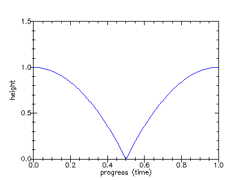

5.3 Putting a bounce into the Reflections style
Tip: Copy-paste the tutorial URL into the muveeStyleBrowser’s address box to get the styles for the various stages.
The Reflections style that comes with muvee Reveal, by design, does not react much to the music track. We’ll use that as an opportunity and make pictures bounce to music. In the process, you’ll learn about animating effect parameters and how to access information about the music track and use that information to determine an effect’s behaviour.
This tutorial needs you to be familiar with Getting Started. We’ll also be getting into some depth coding up effect animations in muSE, so it helps to familiarize yourself with (at least) the basics of muSE in A Gentle Introduction to muSE.
5.3.1 STAGE 1 : Preparation
Style: S10000_ReflectionsWithABounce_Stage1
Style id: S10000_ReflectionsWithABounce
Style name: Reflections with a bounce
Style description: Your pictures bounce to the music on a reflecting surface.
Launch muvee Reveal, add some pictures to the media panel and select your Reflections with a bounce style.
5.3.2 STAGE 2 : Flight check
Style: S10000_ReflectionsWithABounce_Stage2
In order to bounce the pictures, we need to move it up and down in a specific pattern. We therefore need to use the Translate effect on the pictures, animating the y parameter to do the bounce.
We first do a simple exercise to make sure we can translate pictures correctly - we just move the pictures from the reflecting floor by a fixed amount. Keeping in mind that positive values of y give you upward movement and negative values give you downward movement, we apply a Translate effect on the pictures with a y value of 0.2.
We want to apply the translation to each picture *before* it is placed on the reflecting surface and the paraphernalia (stars, circles, etc.) get added. We therefore need to look for muvee-segment-effect and insert the translation at the segment level.
Segment level effects
From the muveeStyleBrowser, open your style’s "data.scm" file by right clicking on your style and selecting Edit data.scm. For the rest of the tutorial, you can keep muvee Reveal and your text editor for the "data.scm" file open simultaneously.
Locate the definition point of muvee-segment-effect in the "data.scm" file.
(define muvee-segment-effect (effect-stack reflection-and-polygons-fx captions-fx))
The captions-fx specifies how to place a picture’s captions on it and the reflection-and-polygons-fx specifies that the picture together with it caption text has to be reflected on a shiny surface and should have some sprites moving about on the floor.
- Add a bounce definition and insert it into the effect-stack as shown below -
; ---- Add the following definition ---- (define bounce (effect "Translate" (A) (param "y" 0.2))) ; -------------------------------------- (define muvee-segment-effect (effect-stack reflection-and-polygons-fx captions-fx ; <<-- Remove )) from this line. bounce)) ; <<-- Add this line. Save your "data.scm" file and click the play button in muvee Reveal while holding down the Shift key. Notice that the picture now floats above the floor instead of sitting on it. So "Translate" works just as it should.
The location of bounce in the effect-stack
Ref: effect-stack
(effect-stack bounce reflection-and-polygons-fx captions-fx)
(effect-stack reflection-and-polygons-fx bounce captions-fx)
(You will need to add some caption text for a picture to tell the difference between placing bounce before and after captions-fx.)
You’ve now got the basic stuff in place. Further on, we’ll focus on exactly how to generate the bounce that we’re looking for.
5.3.3 STAGE 3 : The elementary bounce
Style: S10000_ReflectionsWithABounce_Stage3
If you plot the height of a bouncing object against time, it will look like the following graph -

(define bounce (effect "Translate" (A) (param "y" 0.2 (linear 0.1 0.19) (linear 0.2 0.17) (linear 0.3 0.13) (linear 0.4 0.07) (linear 0.5 0.0) (linear 0.6 0.07) (linear 0.7 0.13) (linear 0.8 0.17) (linear 0.9 0.19) (linear 1.0 0.2))))
(define (bounce-anim height start stop time dt) (let ((t (math time + dt))) (if (< t stop) (let ((p (math (t - start) / (stop - start)))) (linear t (math 4 * height * p * (1 - p))) (bounce-anim height start stop (+ time dt) dt)) (linear stop 0.0)))) (define bounce (effect "Translate" (A) (param "y" 0.2 (bounce-anim 0.2 ; Height ; Convert from relative time to absolute time using progress function. (progress 0.0) ; Start time (progress 1.0); Stop time (progress 0.0) ; Initial time 1/20)))) ; 20 animation points per second.
The bounce-anim function generates one bounce of height height starting from absolute time start and ending at absolute time stop in steps of dt. The time parameter is just to keep track of progress over the animation.
If you tried that out, you’d have found the bounce to be really slow. Lets speed it up by doing many bounces for each picture -
(define bounce (effect "Translate" (A) (param "y" 0.0 (bounce-anim 0.2 (progress 0.0) (progress 0.1) (progress 0.0) 1/20) (bounce-anim 0.2 (progress 0.1) (progress 0.2) (progress 0.1) 1/20) (bounce-anim 0.2 (progress 0.2) (progress 0.3) (progress 0.2) 1/20) (bounce-anim 0.2 (progress 0.3) (progress 0.4) (progress 0.3) 1/20) (bounce-anim 0.2 (progress 0.4) (progress 0.5) (progress 0.4) 1/20) (bounce-anim 0.2 (progress 0.5) (progress 0.6) (progress 0.5) 1/20) (bounce-anim 0.2 (progress 0.6) (progress 0.7) (progress 0.6) 1/20) (bounce-anim 0.2 (progress 0.7) (progress 0.8) (progress 0.7) 1/20) (bounce-anim 0.2 (progress 0.8) (progress 0.9) (progress 0.8) 1/20))))
We’re now able to generate multiple bounces for each picture, with the bounce points at the time of our choice. Now, all that’s left is to align the times to appropriate events in the music track.
5.3.4 Interlude: Cut hints
When muvee Reveal analyzes a music file, it detects events such as drum hits. For each such detected event, it records a time-value pair, where the time says when the event occurred and the value (in the range 0.0 to 1.0) says how strong the event is. The events based on broad spectrum analysis of the music data are called cut hints. You can access this data in a style using the cut-hints function. Although cut hints are computed per music file, the cut-hints function consolidates the hints for all the music files used in the muvee’s music track.
'((2.3 . 0.2) (3.5 . 0.7) (4.5 . 0.1))
Within an effect expression, you can use the start and stop implicit parameters to access the time interval during which the effect will be active. You can therefore extract the cut hints using - (cut-hints start stop).
5.3.5 STAGE 4 : Bouncing to events in the music track.
Style: S10000_ReflectionsWithABounce_Stage4
We want to generate one bounce between every two consecutive cut hints within a picture’s presentation interval. That way, the bounce point will synchronize with the cut hint. But in order to get cut-hints, we need a music track. So go ahead and add some music now. For lack of a better suggestion, you can add the sample music that comes with muvee Reveal which you can find in your "Music" folder. Make sure you put in about 15 pictures for every minute of music that you add.
'((2.3 . 0.2) (3.5 . 0.7) (4.5 . 0.1))
(define (bounce-to-hints height start stop hints dt) (case hints (() (bounce-anim height start stop start dt)) (((t . v) . hints*) (bounce-anim height start t start dt) (bounce-to-hints height t stop hints* dt))))
(define bounce (effect "Translate" (A) (param "y" 0.0 (bounce-to-hints 0.2 start stop (cut-hints start stop) 1/20))))
Make some muvees with different music tracks and watch the pictures bounce to the beat points.
5.3.6 STAGE 5 : Selecting better bounce points
Style: S10000_ReflectionsWithABounce_Stage5
At the end of stage 4, you’ll notice that on some occasions there may be too many bounces or the bounces may be too close to each other for taste. In this stage, we’ll work on selecting a nice set of bounce points for each picture.
Select only the hints whose strength is above a certain threshold.
Limit the number of hints selected for each picture, according to the hint strength - i.e. pick the N strongest hints for a fixed N.
Set a lower limit on the time difference between two consecutive hints.
(define (select-strongest-hints hints N) (let ((strongest-to-weakest (sort hints (fn ((t . v)) (- v)))) (N-strongest (take N strongest-to-weakest)) (time-order (sort N-strongest first))) time-order)) (define bounce (effect "Translate" (A) (param "y" 0.0 (bounce-to-hints 0.2 start stop (select-strongest-hints (cut-hints start stop) 12) 1/20))))
5.3.7 STAGE 6 : Generating a better bounce
Style: S10000_ReflectionsWithABounce_Stage6
The bounce we have at this point is not very physical. For one thing, the bounce speed seems to vary from one bounce to the next whereas natural objects don’t do that. For natural objects, the bounce duration will be longer only if it bounces higher. The solution to this is therefore quite simple. We make the height of the bounce proportionate to its duration.
Change the definition of bounce-to-hints to -
(define (dur->height start stop) (math (stop - start) / 5.0)) (define (bounce-to-hints start stop hints dt) (case hints (() (bounce-anim (dur->height start stop) start stop start dt)) (((t . v) . hints*) (bounce-anim (dur->height start t) start t start dt) (bounce-to-hints t stop hints* dt))))
.. and the definition of bounce will have to now drop the height parameter to bounce-to-hints.
(define bounce (effect "Translate" (A) (param "y" 0.0 (bounce-to-hints start stop (select-strongest-hints (cut-hints start stop) 12) 1/20))))
(define (bounce-anim height start stop time dt) (let ((t (+ time dt))) (if (< t stop) (let ((p (math (t - start) / (stop - start)))) (linear t (math 4 * height * p * (1 - p))) (bounce-anim height start stop (+ time dt) dt)) (linear stop 0.0)))) (define (dur->height start stop) (math (stop - start) / 5.0)) (define (bounce-to-hints start stop hints dt) (case hints (() (bounce-anim (dur->height start stop) start stop start dt)) (((t . v) . hints*) (bounce-anim (dur->height start t) start t start dt) (bounce-to-hints t stop hints* dt)))) (define (select-strongest-hints hints N) (let ((strongest-to-weakest (sort hints (fn ((t . v)) (- v)))) (N-strongest (take N strongest-to-weakest)) (time-order (sort N-strongest first))) time-order)) (define bounce (effect "Translate" (A) (param "y" 0.0 (bounce-to-hints start stop (select-strongest-hints (cut-hints start stop) 12) 1/20)))) (define muvee-segment-effect (effect-stack reflection-and-polygons-fx captions-fx bounce))
5.3.8 Beyond
Make the pictures bounce higher if the bounce starts on a strong hint value.
Filter out hints that are too close to each other. One approach is to use a time threshold, but you can also try varying the time threshold depending on hint strength value.
Use similar techniques to twist the pictures instead of bouncing them on the floor.